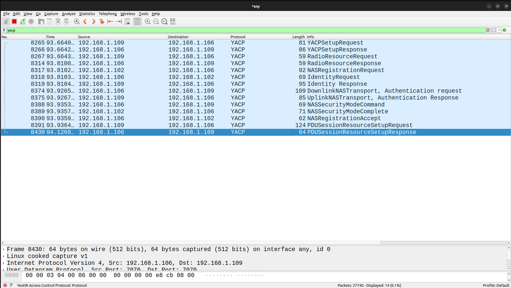
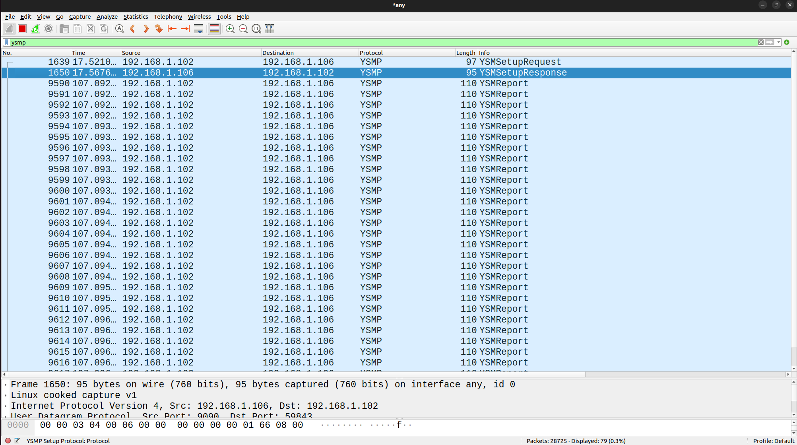
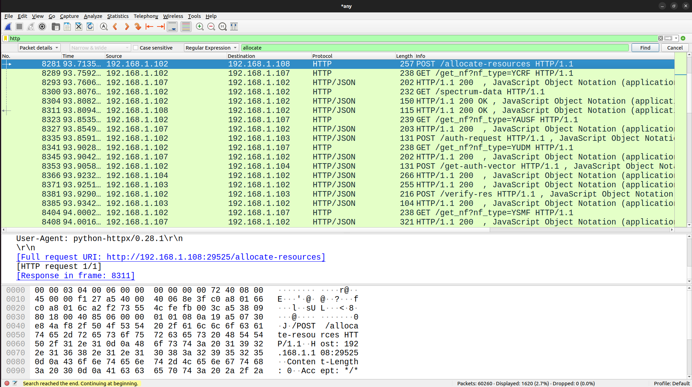
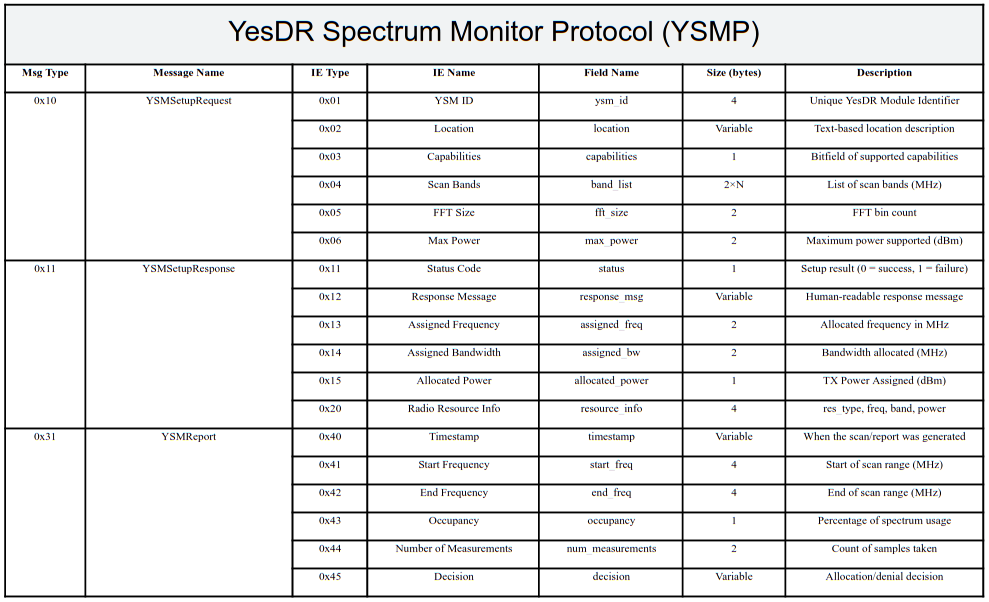

<!DOCTYPE hl>
<hl lang="en">
<head>
  <meta charset="UTF-8" />
  <meta name="viewport" content="width=device-width, initial-scale=1.0"/>
  <title>YesDR – AI-Powered Private Cellular Standard</title>
  <style>
    body {
      margin: 0;
      font-family: Arial, sans-serif;
      background-color: #0e0e0e;
      color: #eaeaea;
    }
    header {
      background: linear-gradient(to right, #2b5876, #4e4376);
      padding: 60px 20px;
      text-align: center;
    }
    header h1 {
      font-size: 3em;
      color: #ffffff;
    }
    header p {
      font-size: 1.4em;
      color: #ffffff;
    }
    section {
      padding: 40px 20px;
      max-width: 1000px;
      margin: 0 auto;
    }
    h2 {
      color: #ffffff;
      border-bottom: 2px solid #555;
      padding-bottom: 5px;
    }
    table {
      width: 100%;
      border-collapse: collapse;
      margin-top: 20px;
    }
    th, td {
      padding: 12px;
      border: 1px solid #444;
      text-align: left;
    }
    th {
      background-color: #333;
      color: #fff;
    }
    tr:nth-child(even) {
      background-color: #1e1e1e;
    }
    footer {
      text-align: center;
      padding: 30px;
      background-color: #111;
      font-size: 0.9em;
      color: #aaa;
      line-height: 1.6em;
    }
  </style>
</head>
<body>

  <header>
    <h1>YesDR</h1>
    <p>An AI-Powered Private Cellular Standard</p>
  </header>


  <section>
    <h2>What is YesDR?</h2>
    <p>
      <strong>YesDR</strong> (<strong>Y</strong>our <strong>e</strong>xtensible <strong>s</strong>oftware <strong>D</strong>efined <strong>R</strong>adio) is an open, modular standard framework for the development, instruction, and experimentation of end-to-end cellular wireless protocols—spanning from the physical layer to the core network—utilizing Software-Defined Radios (SDRs). Engineered for flexibility and extensibility, YesDR facilitates the integration of AI-driven features including channel prediction, protocol optimization, dynamic spectrum access, traffic forecasting, spectrum sensing, signal classification, and network automation. YesDR standard framework empowers academic researchers, educators, and startups to advance 5G/6G testbeds, develop AI-enhanced wireless solutions, and foster innovation in future communication technologies.
    </p>
  </section>

<section>
  <h2>Mission</h2>
  <p>
    To offer a transparent, modular wireless standard stack for research, teaching, and innovation—from PHY to core.
  </p>
</section>

<section>
  <h2>Who It's For</h2>
  <ul>
    <li>Academic researchers in wireless communication, SDR, and AI integration</li>
    <li>University labs (ECE, CSE) and deep-tech startups working on 5G/6G technologies</li>
    <li>Organizations building 5G/6G testbeds</li>
    <li>Engineering colleges and universities teaching 5G/6G standards and architecture</li>
    <li>Faculty and students pursuing UG/PG projects in end-to-end cellular communication</li>
    <li>Teams designing new core network and RAN protocols for future wireless systems</li>
    <li>Makers, hobbyists, and open-source enthusiasts exploring cellular stack development</li>
    <li>Educators building lab-based curriculum for practical 5G/6G training</li>
    <li>Researchers focused on PHY-layer innovation, protocol optimization, or MEC/ORAN integration</li>
  </ul>
</section>

    
<section>
  <h2>Developed By</h2>
  <p>
    <strong>Chandhar Research Labs Pvt Ltd</strong><br>
    <strong>BaSig Wireless Laboratories Pvt Ltd</strong><br>
    1/302, Main Road, Arupathy,<br>
    Tharangambadi Taluk, Mayiladuthurai District,<br>
    Tamil Nadu – 609 309, India.
  </p>
</section>

  
  <section>
    <h2>Deep Radio®</h2>
    <p>
      <strong>Deep Radio®</strong>, a flagship product from Chandhar Research Labs Pvt Ltd and BaSig Wireless Laboratories Pvt Ltd, is built entirely on the YesDR standard. It delivers a practical, end-to-end wireless testbed for education, research, and prototyping in 5G/6G and AI-driven radio systems.
    </p>
  </section>

  
  <section>
    <h2>YesDR Overall Architecture</h2>
    <p>The figure below illustrates the end-to-end architecture of YesDR including the Control and User Planes.</p>
    <div style="text-align: center;">
      
    </div>
  </section>
  
  <section>
    <h2>YesDR Components</h2>
    <table>
      <thead>
        <tr>
          <th>Term</th>
          <th>Full Form</th>
          <th>Description</th>
        </tr>
      </thead>
      <tbody>
        <tr><td>YUE</td><td>YesDR User Equipment</td><td>The end-device or terminal used by the end user.</td></tr>
        <tr><td>YBS</td><td>YesDR Base Station </td><td>Provides radio access and initial control signaling.</td></tr>
        <tr><td>YSM</td><td>YesDR Spectrum Monitor </td><td>Dedicated unit that monitors spectrum usage in real time, identifies interference, and
detects underutilized bands to support dynamic spectrum allocation via YCRF.</td></tr>
        <tr><td>YCore</td><td>YesDR Core</td><td>Dedicated unit that monitors spectrum usage in real time, identifies interference, and
detects underutilized bands to support dynamic spectrum allocation via YCRF.</td></tr>     
      </tbody>
    </table>
  </section>

  <section>
    <h2>YesDR Core Functions</h2>
    <table>
      <thead>
        <tr>
          <th>Term</th>
          <th>Full Form</th>
          <th>Description</th>
        </tr>
      </thead>
      <tbody>
        <tr><td>YAMF</td><td>YesDR Access and Mobility Management Function</td><td>Handles registration and mobility</td></tr>
        <tr><td>YSMF</td><td>YesDR Session Management Function</td><td>Manages IP session lifecycles</td></tr>
        <tr><td>YUPF</td><td>YesDR User Plane Function</td><td>Forwards user-plane traffic</td></tr>
        <tr><td>YNRF</td><td>YesDR Network Repository Function</td><td>Service discovery and registration</td></tr>
        <tr><td>YUDM</td><td>YesDR Unified Data Management</td><td>Subscriber and device profile storage</td></tr>
        <tr><td>YAUSF</td><td>YesDR Authentication Service Function</td><td>Identity verification and key agreement</td></tr>
        <tr><td>YPCF</td><td>YesDR Policy Charging Function</td><td>Applies policies to sessions and flows</td></tr>
        <tr><td>YNEF</td><td>YesDR Network Exposure Function</td><td>External access to network services</td></tr>
        <tr><td>YNSSF</td><td>YesDR Network Slice Selection Function</td><td>Manages network slicing</td></tr>
        <tr><td>YRMF</td><td>YesDR Radio Management Function</td><td>Spectrum, power, bandwidth allocation</td></tr>
        <tr><td>YCRF</td><td>YesDR Cognitive Radio Function</td><td>AI-driven spectrum monitoring</td></tr>
      </tbody>
    </table>
  </section>

  <section>
    <h2>Control Protocols</h2>
    <table>
      <thead>
        <tr>
          <th>Protocol</th>
          <th>Full Form</th>
          <th>Description</th>
        </tr>
      </thead>
      <tbody>
        <tr><td>YACP</td><td>YesDR Access Control Protocol</td><td>Manages access and authentication</td></tr>
        <tr><td>YSMP</td><td>YesDR Spectrum Managment Protocol</td><td>Coordinates spectrum management</td></tr>
        <tr><td>YTP</td><td>YesDR Tunneling Protocol</td><td>Encapsulation and forwarding of data</td></tr>
      </tbody>
    </table>
  </section>

  <section>
    <h2>YesDR: End-to-End Flow Diagram</h2>
    <div style="text-align: center;">
    
    </div>
  </section>


  
    <section>
    <h2>YACP Packet Details in Wireshark</h2>
    <div style="text-align: center;">
      
    </div>
    </section>


  
    <section>
    <h2>YSMP Packet Details in Wireshark</h2>
    <div style="text-align: center;">
      
    </div>
    </section>


  
    <section>
    <h2>PFCP Packet Details in Wireshark</h2>
    <div style="text-align: center;">
      
    </div>
    </section>


  
    <section>
    <h2>HTTP Packet Details in Wireshark</h2>
    <div style="text-align: center;">
      
    </div>
    </section>

  
    <section>
    <h2>GTP Packet Details in Wireshark</h2>
    <div style="text-align: center;">
      
    </div>
    </section>


    <section>
    <h2>YACP and YSMP Packet Message Details</h2>
    <div style="text-align: center;">
      
    </div>
    <div style="text-align: center;">
      
    </div>
    </section>


    
<section>
  <h2>Key Features of YesDR</h2>
  <ul>
    <li><strong>Open Academic Standard:</strong> YesDR is a fully open and academic-friendly alternative to complex 3GPP stacks, enabling students and researchers to develop, test, and teach wireless protocols with ease.</li>
    <li><strong>Full-Stack Customization:</strong> Offers complete visibility and control across PDCP → RLC → MAC → PHY layers, including GTP tunneling—ideal for protocol experimentation and innovation.</li>
    <li><strong>Python/C++ Dual Availability:</strong> Developed initially in Python for quick prototyping and research, with seamless migration to high-performance C++ for deployment.</li>
    <li><strong>Named Subsystems:</strong> Modular components like <code>YUE</code>, <code>YBS</code>, <code>YCore</code>, etc., mimic 3GPP functions in a simplified structure, making it intuitive for teaching and rapid iteration.</li>
    <li><strong>Hardware Agnostic:</strong> Compatible with Deep Radio.</li>
    <li><strong>Community-Driven Framework:</strong> Built to grow as a collaborative, open-source project, with extensible architecture and contributor-friendly design.</li>
    <li><strong>Interoperability Ready:</strong> Designed to integrate with existing tools like OpenAirInterface, Free5GC, Open5GS, UERANSIM, and potential ORAN-based components—bridging experimentation with real-world 5G/6G deployments.</li>
  </ul>
</section>

  
  <section>
    <h2>Core Components to Finalize</h2>
    <table>
      <thead>
        <tr>
          <th>Component</th>
          <th>Status</th>
          <th>Next Step</th>
        </tr>
      </thead>
      <tbody>
        <tr><td>YUE (UE)</td><td>Done</td><td>Port to C++, test on hardware</td></tr>
        <tr><td>YBS (Base Station)</td><td>Done</td><td>Add scheduler, Control Signalling</td></tr>
        <tr><td>YSM (Spectrum Monitor)</td><td>Done</td><td>Add traffic prediction</td></tr>
        <tr><td>YCore (Core)</td><td>Done</td><td>Finalize</td></tr>
        <tr><td>Protocols (YACP, YSMP)</td><td>Done</td><td>Draft full behavior + message formats</td></tr>
        <tr><td>YPHY (BPSK stack)</td><td>Working</td><td>Add QPSK, OFDM, channel coding options</td></tr>
        <tr><td>YPHY (OFDM stack)</td><td>Tx Done</td><td>OFDM Receiver to be done</td></tr>
        <tr><td>YPHY (UDP stack)</td><td>Done</td><td>Add uplink</td></tr>

      </tbody>
    </table>
  </section>


<section>
  <h2>Contributors</h2>
  <ul>
    <li><strong>Prabhu Chandhar</strong>, Chandhar Research Labs Pvt Ltd, BaSig Wireless Laboratories Pvt Ltd</li>
    <li><strong>Atmanand Gauns</strong>, Intern from Goa College of Engineering, Goa (Faculty: Shajahan Kutty)</li>
    <li><strong>Pattabiram</strong>, Intern from KL University, Vijayawada, Andhra Pradesh (Faculty: Aravind Kilaru)</li>
    <li><strong>Shiva Kumar Malaya</strong>, Intern from KL University, Vijayawada, Andhra Pradesh (Faculty: Aravind Kilaru)</li>
  </ul>
</section>
  
  <footer>
    © 2025 Chandhar Research Labs Pvt Ltd | Designed for Wireless Research and Innovation
  </footer>

</body>
</hl>
